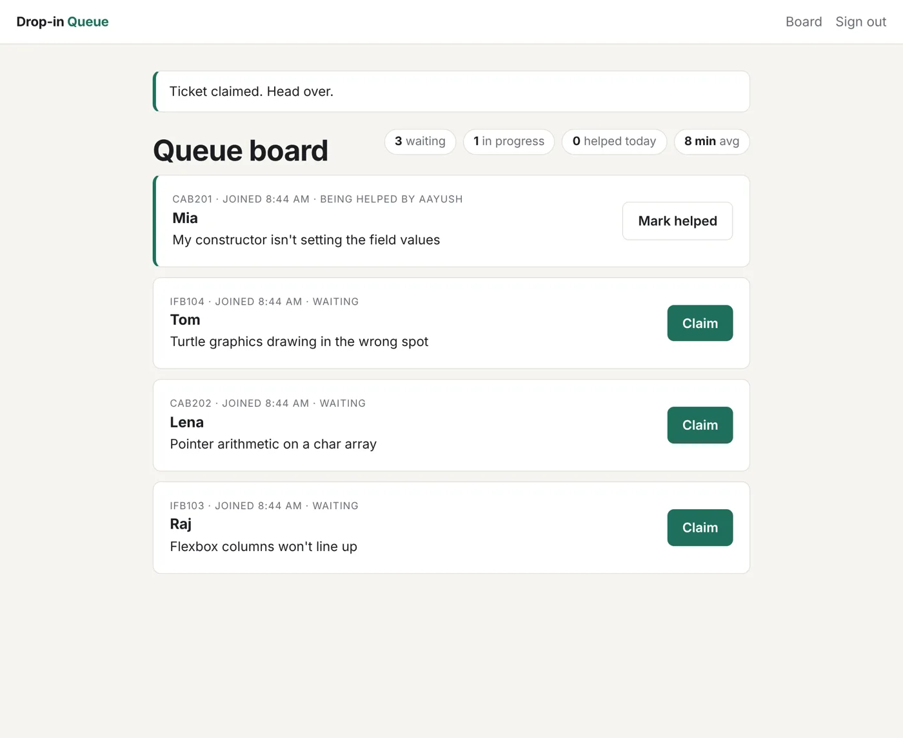
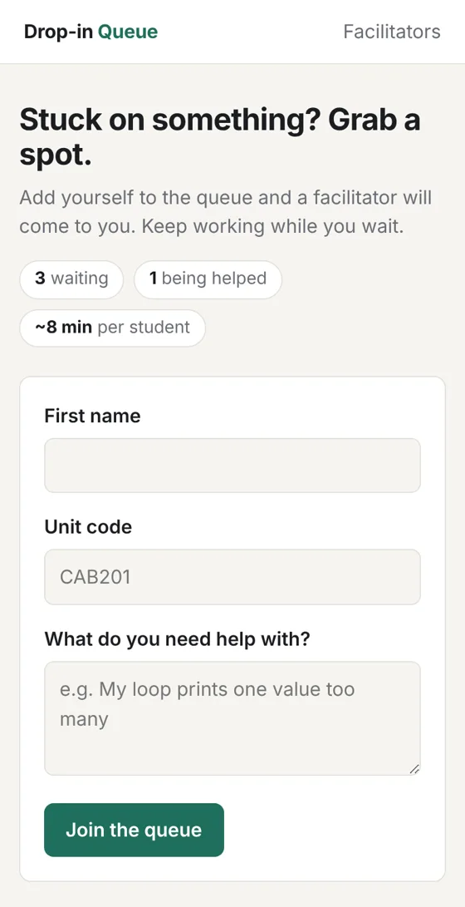

I build things for the web, and I help people get unstuck when theirs won't run.
I'm Aayush, an IT student at QUT in Brisbane (AI and Software Development, graduating 2027). I write PHP, JavaScript and Python, and most weeks I'm sitting next to a student working out why their code does what it does.
Latest project
Drop-in Queue
A help queue for study drop-in sessions. Students join from their laptop and see their place and a wait estimate. Facilitators claim the next student from a live board.
I built it because of a real problem at STIMulate, where I facilitate: on busy nights it's hard to tell who has waited longest. I wrote it in plain PHP with my own router, controllers and views, so I'd understand what frameworks like Symfony are doing for me.
- MVC without a framework: front controller, router with URL parameters, thin controllers, a service layer and a repository for SQL
- LAMP: Apache and MySQL in Docker, plus SQLite for quick local runs
- Careful with details: prepared statements, escaped output, CSRF tokens, and two facilitators can't claim the same student
- Tested: 15 PHPUnit tests, including the wait-time maths with a fake clock
PHP 8 · MySQL · Apache · Docker · PHPUnit · Git


Other work
-
ThinkTrace
Team of 4An AI learning assistant: chat, document upload, speech input and spoken replies. Over 200 commits across the team, with features built on branches and merged through pull requests.
Next.js · React · Python · TensorFlow · Azure
Private repo. Happy to walk through it.
-
Strobe API
UniversityMoved a social media backend from a single Express server with a JSON file database to serverless AWS: Lambda functions behind API Gateway, DynamoDB, Cognito sign-in and S3 for media.
Node.js · AWS Lambda · DynamoDB · Cognito · S3 · API Gateway
-
Appfluence
TeamCleaned App Store and Google Play data, predicted which apps become popular, and grouped the market into four segments that held up across both stores.
Python · pandas · scikit-learn · Random Forest · K-Means · PCA
-
Raspberry Pi web server
PersonalSet up and hosted my own Apache web server on a Raspberry Pi running Linux, with a Flask app that sends SMS notifications.
Linux · Apache · Python · Flask
-
Dogs vs Cats
TeamAn image classifier we built and presented at a Google Developer Groups session. The point was honest evaluation: keep the test set untouched until the very end.
Python · TensorFlow · Google Colab
How I use AI tools
I use coding assistants like Claude every day. They're fast at the first draft and at explaining unfamiliar code. I treat what they write the way I'd treat a teammate's pull request: I read it, run it, test it, and only keep what I can explain. On Drop-in Queue that review caught two real bugs before they shipped.
Experience
- Oct 2026 – nowAssistant Analyst, Analytics and AI CapabilityQUT Digital Business Solutions
- Jul 2026 – nowStudent Success PartnerQUT
- Jun 2026 – nowHiQ ConciergeQUT
- Feb 2026 – nowPeer Learning FacilitatorSTIMulate, QUT
- Nov 2025 – nowInstructorCode Camp
- Nov 2025 – nowProjects OfficerQUT AI and Machine Learning Society
Bachelor of Information Technology, QUT. Artificial Intelligence and Software Development. Faculty of Science Dean's Scholar. Expected 2027.
Say hello
I'm based in Brisbane and looking for part-time web development work.